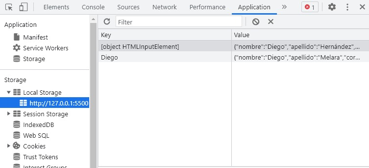
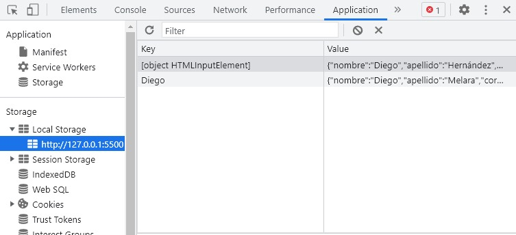

¿Qué es LocalStorage en JavaScript?
LocalStorage es una herramienta que es compatible con HTML5 y los navegadores que le soportan, Guarda información que permanecerá almacenada por tiempo indefinido; sin importar que el navegador se cierre.. Esta herramienta tiene la propiedad o capacidad de almacenar datos de manera local en el navegador el usuario este utilizando mientras navega. Dicha información quedara almacenada de manera permanente en cada sesión que inicie el usuario en su navegador, al menos que esta sea eliminada a propósito. El funcionamiento de LocalStorage se puede comparar con la manera de trabajo de las Cookies, sin embargo, este cuenta con 5mb de espacio y al hacerse de manera local no requiere hacer repeticiones de servidor. Sabiendo que LocalStorage es una herramienta que se utiliza vía JavaScript y nos permite manipular nuestros datos de la manera en que creamos mas conveniente, se debe tener en cuenta los métodos para utilizarlo:
localStorage.setItem(“key”,item);
En el primer parámetro “key”, se debe ingresar el nombre del elemento, y en el parámetro “item” se
debe ingresar el valor de este.
En este caso se esta guardando en el LocalStorage en elemento llamado “userId” con el valor de 15
localStorage.getItem("key");
Este método nos sirve para obtener un valor almacenado en el LocalStorage donde “key”, es el nombre de este valor.
En este ejemplo la variable userId almacenara el valor que tienen el elemento de nombre “userId” en el LocalStorage.
localStorage.removeItem("key");
Este método sirve para eliminar del almacenamiento del LocalStorage, algún elemento, que se representa por “key”, donde “key” es su nombre.
Se elimina el elemento de nombre “userId”, del almacenamiento en LocalStorage, o almacenamiento local.
Ejemplo de LocalStorage.
Una vez que conocemos los escencial para iniciar a usar el LocalStorage pasaremos a ver un ejemplo en el cual registraremos un arreglo como parte de almacenamiento local por medio de un formulario.
Paso 1.
Primero iniciamos creando un formulario para poder crearlos campos que se ingresaran y almacenaran de manera local
Paso 2.
Una vez creado el formulario creamos un script básico en el que usaremos unicamente los metodo de setItem y getItem, estos se ejecutaran al activar la función crearUsario()
Paso 3.
Cuando tengamos el script creado solo faltaria probar y ejecuta el formulario el cual se aprecia en las siguiente imagenes (El formulario se diseño con Bootstrap)
Paso 4.
Solo falta en registrar un usuario, una vez hecho esto no alertara por medio de un "alert" y una vez muestre los datos podremos ir a ver a las herramienta de desarrollador para ver si en verdad almaceno, tal como muestra la imagen
Ir a página de ejemplo 
